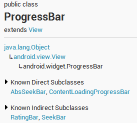

ProgressBar简介

继承于View类，直接子类有AbsSeekBar和ContentLoadingProgressBar，其中AbsSeekBar的子类有SeekBar和RatingBar，可见这二者也是基于ProgressBar实现的。
1、ProgressBar有两个进度，一个是android:progress，另一个是android:secondaryProgress。后者主要是为缓存需要所涉及的，比如在看网络视频时候都会有一个缓存的进度条以及还要一个播放的进度，在这里缓存的进度就可以是android:secondaryProgress，而播放进度就是android:progress，有了secondProgress，可以很方便定制ProgressBar。
2、ProgressBar分为确定的和不确定的，确定的是我们能明确看到进度，相反不确定的就是不清楚、不确定一个操作需要多长时间来完成，这个时候就需要用的不确定的ProgressBar了。属性android:indeterminate如果设置为true的话，那么ProgressBar就可能是圆形的滚动条或者水平的滚动条（由样式决定），但是我们一般时候，是直接使用Style类型来区分圆形还是水平ProgressBar的。
3、ProgressBar的样式设定其实有两种方式，在API文档中说明的方式如下：
- Widget.ProgressBar.Horizontal
- Widget.ProgressBar.Small
- Widget.ProgressBar.Large
- Widget.ProgressBar.Inverse
- Widget.ProgressBar.Small.Inverse
- Widget.ProgressBar.Large.Inverse
- style="?android:attr/progressBarStyle"
- style="?android:attr/progressBarStyleHorizontal"
- style="?android:attr/progressBarStyleInverse"
- style="?android:attr/progressBarStyleLarge"
- style="?android:attr/progressBarStyleLargeInverse"
- style="?android:attr/progressBarStyleSmall"
- style="?android:attr/progressBarStyleSmallInverse"
- style="?android:attr/progressBarStyleSmallTitle"
- <ProgressBar
- android:id="@+id/progressBar1"
- style="?android:attr/progressBarStyleHorizontal"
- style="@android:style/Widget.ProgressBar.Horizontal"（等同于@android:attr）
- android:layout_width="match_parent"
- android:layout_height="wrap_content" />
水平ProgressBar系统样式
我们去看一下style="?android:attr/progressBarStyleHorizontal"的源码，如下：
- <pre name="code" class="java"> <style name="Widget.ProgressBar.Horizontal">
- <item name="android:indeterminateOnly">false</item>
- <item name="android:progressDrawable">@android:drawable/progress_horizontal</item>
- <item name="android:indeterminateDrawable">@android:drawable/progress_indeterminate_horizontal</item>
- <item name="android:minHeight">20dip</item>
- <item name="android:maxHeight">20dip</item>
- <item name="android:mirrorForRtl">true</item>
- </style>
- <?xml version="1.0" encoding="utf-8"?>
- <!-- Copyright (C) 2008 The Android Open Source Project
- Licensed under the Apache License, Version 2.0 (the "License");
- you may not use this file except in compliance with the License.
- You may obtain a copy of the License at
- http://www.apache.org/licenses/LICENSE-2.0
- Unless required by applicable law or agreed to in writing, software
- distributed under the License is distributed on an "AS IS" BASIS,
- WITHOUT WARRANTIES OR CONDITIONS OF ANY KIND, either express or implied.
- See the License for the specific language governing permissions and
- limitations under the License.
- -->
- <layer-list xmlns:android="http://schemas.android.com/apk/res/android">
- <item android:id="@android:id/background">
- <shape>
- <corners android:radius="5dip" />
- <gradient
- android:startColor="#ff9d9e9d"
- android:centerColor="#ff5a5d5a"
- android:centerY="0.75"
- android:endColor="#ff747674"
- android:angle="270"
- />
- </shape>
- </item>
- <item android:id="@android:id/secondaryProgress">
- <clip>
- <shape>
- <corners android:radius="5dip" />
- <gradient
- android:startColor="#80ffd300"
- android:centerColor="#80ffb600"
- android:centerY="0.75"
- android:endColor="#a0ffcb00"
- android:angle="270"
- />
- </shape>
- </clip>
- </item>
- <item android:id="@android:id/progress">
- <clip>
- <shape>
- <corners android:radius="5dip" />
- <gradient
- android:startColor="#ffffd300"
- android:centerColor="#ffffb600"
- android:centerY="0.75"
- android:endColor="#ffffcb00"
- android:angle="270"
- />
- </shape>
- </clip>
- </item>
- </layer-list>
自定义水平ProgressBar
第一步，在drawable文件夹下新建一个progressbar_horizontal_1.xml：
- <?xml version="1.0" encoding="utf-8"?>
- <layer-list xmlns:android="http://schemas.android.com/apk/res/android" >
- <!-- background -->
- <item
- android:id="@android:id/background"
- android:drawable="@drawable/progress_patch_green">
- </item>
- <!-- progress -->
- <item android:id="@android:id/progress">
- <clip>
- <nine-patch android:src="@drawable/progress_patch_galy" />
- </clip>
- </item>
- <!-- second progress -->
- <item android:id="@android:id/secondaryProgress">
- <clip>
- <nine-patch android:src="@drawable/progresspatch_blue" />
- </clip>
- </item>
- </layer-list>
第二步，标准一点，在style中新建我们自定义的style：mProgress_horizontal：
- <style name="mProgress_horizontal">
- <item name="android:indeterminateOnly">false</item>
- <item name="android:progressDrawable">@drawable/progressbar_horizontal_1</item><!-- progress_horizontal -->
- <item name="android:indeterminateDrawable">@android:drawable/progress_indeterminate_horizontal</item>
- <item name="android:minHeight">20dip</item>
- <item name="android:maxHeight">20dip</item>
- </style>
第三步，组件引用：
- <ProgressBar
- android:id="@+id/progressBar1"
- android:layout_width="match_parent"
- android:layout_height="wrap_content"
- android:background="@drawable/progress_backround"
- android:padding="5dp"
- android:progress="50"
- style="@style/mProgress_horizontal"
- android:secondaryProgress="20"
- android:visibility="visible" />
在这里我们也可以省略第二步创建style，直接在组件中android:progressDrawable引用自己的progressbar_horizontal_1，如下：
- <ProgressBar
- android:id="@+id/progressBar1"
- android:indeterminate="false"
- android:indeterminateOnly="false"
- android:layout_width="match_parent"
- android:layout_height="wrap_content"
- android:background="@drawable/progress_backround"
- android:padding="5dp"
- android:progress="50"
- android:maxHeight="20dp"
- android:minHeight="20dp"
- android:progressDrawable="@drawable/progressbar_horizontal_1"
- android:secondaryProgress="20"
- />
第四步，效果图：

圆形ProgressBar系统样式
- <ProgressBar
- android:id="@+id/progressBar2"
- style="@android:attr/progressBarStyleLarge"
- android:layout_gravity="center_vertical"
- android:layout_width="match_parent"
- android:layout_height="wrap_content" />
- <style name="Widget.ProgressBar.Large">
- <item name="android:indeterminateDrawable">@android:drawable/progress_large_white</item>
- <item name="android:minWidth">76dip</item>
- <item name="android:maxWidth">76dip</item>
- <item name="android:minHeight">76dip</item>
- <item name="android:maxHeight">76dip</item>
- </style>
- <rotate xmlns:android="http://schemas.android.com/apk/res/android"
- android:drawable="@drawable/spinner_white_76"
- android:pivotX="50%"
- android:pivotY="50%"
- android:fromDegrees="0"
- android:toDegrees="360" />
自定义圆形ProgressBar
第一步，在drawable文件夹下新建：progressbar_circle_1.xml，如下：- <?xml version="1.0" encoding="utf-8"?>
- <rotate xmlns:android="http://schemas.android.com/apk/res/android"
- android:drawable="@drawable/loading" //自定义的菊花图片
- android:fromDegrees="0"
- android:pivotX="50%"
- android:pivotY="50%"
- android:toDegrees="360" >
- </rotate>
- <style name="mProgress_circle">
- <item name="android:indeterminateDrawable">@drawable/progressbar_circle_1</item>
- <item name="android:minWidth">25dp</item>
- <item name="android:minHeight">25dp</item>
- <item name="android:maxWidth">60dp</item>
- <item name="android:maxHeight">60dp</item>
- </style>
第三步，组件中引用，如下：
- <ProgressBar
- android:id="@+id/progressBar2"
- style="@style/mProgress_circle"
- android:layout_gravity="center_vertical"
- android:layout_width="match_parent"
- android:indeterminateDuration="1200"
- android:layout_height="wrap_content" />
上面是通过一张图片填充android:indeterminateDrawable，我们也可以定义一个动画或者自定义颜色（shape）来实现，跟图片的用法一样：
定义动画 progress_circle_loading,xml：
- <?xml version="1.0" encoding="UTF-8"?>
- <animation-list android:oneshot="false"
- xmlns:android="http://schemas.android.com/apk/res/android">
- <item android:duration="100" android:drawable="@drawable/loading_1" />
- <item android:duration="100" android:drawable="@drawable/loading_2" />
- <item android:duration="100" android:drawable="@drawable/loading_3" />
- <item android:duration="100" android:drawable="@drawable/loading_4" />
- <item android:duration="100" android:drawable="@drawable/loading_5" />
- <item android:duration="100" android:drawable="@drawable/loading_6" />
- </animation-list>
- <pre name="code" class="java"><item name="android:indeterminateDrawable">@drawable/progress_circle_loading</item>
定义shape颜色 progress_circle_shape.xml
- <?xml version="1.0" encoding="utf-8"?>
- <rotate xmlns:android="http://schemas.android.com/apk/res/android"
- android:fromDegrees="0"
- android:pivotX="50%"
- android:pivotY="50%"
- android:toDegrees="360" >
- <shape
- android:innerRadiusRatio="3"
- android:shape="ring"
- android:thicknessRatio="8"
- android:useLevel="false" >
- <gradient
- android:centerColor="#FFFFFF"
- android:centerY="0.50"
- android:endColor="#1E90FF"
- android:startColor="#000000"
- android:type="sweep"
- android:useLevel="false" />
- </shape>
- </rotate>
style的indeterminateDrawable引入：
- <item name="android:indeterminateDrawable">@drawable/progress_circle_shape</item>
效果图如下：

SeekBar的原理是一样的，不信你看下图，我就是用的seekbar
最后来张全家福：